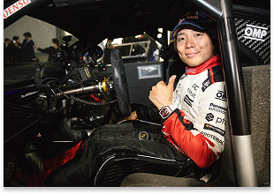
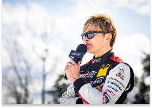
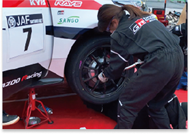
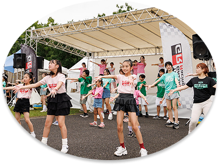
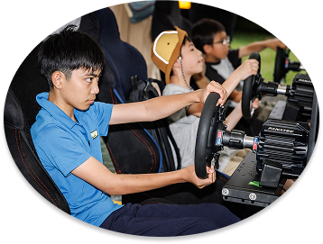
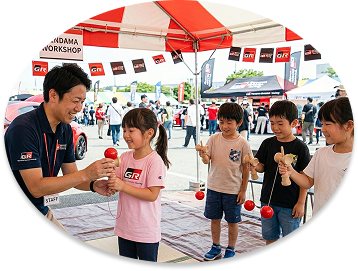
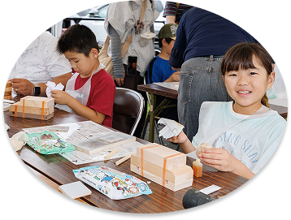
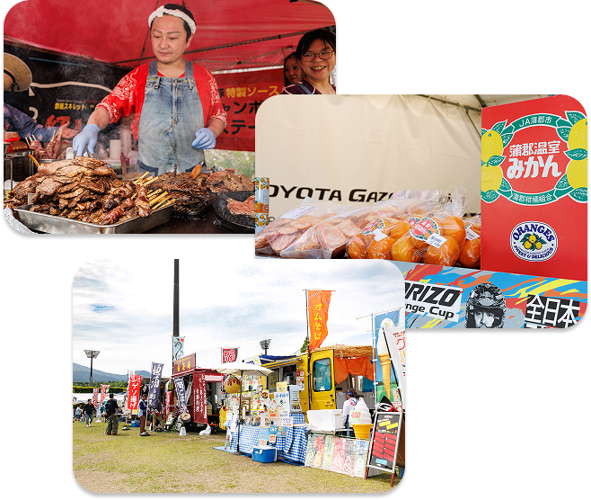

2026.7.18SAT
10:00-18:00

2026.7.19SUN
10:00-16:00
会場
新城総合公園
〒441-1312入場料無料

憧れだったGRヤリスの走りを、今度は家族と一緒に体験できる2日間。
ヤリス100台が並ぶ迫力のギャラリーに、本格的な乗車体験やピット体験。
子どもが夢中になれるキッズエリアや、家族で楽しめるマルシェも充実。
クルマが好きなお父さんも、はじめて触れる家族も、みんなが笑顔になる。
走りの感動を、家族の思い出に変えるフェスへ！！
GRヤリスカーを存分に楽しむことができる「GR Special Zone」 100台のヤリスカーと共に、ヤリスの魅力に触れてお楽しみください。

乗車体験
プロドライバーが運転するGR車両に同乗し、サーキット走行に近い迫力の走りを助手席で体感いただけます。

トークショー
国内外で活躍するトップドライバーが登壇。レースの舞台裏や車両開発の秘話を、ステージ形式でお届けします。

ピット体験
最前線のピット作業を見学。終了後は、実際に使用されるプロの工具やマシンに触れる特別な時間もご用意しています。
乗車体験
プロドライバーが運転するGR車両に同乗し、サーキット走行に近い迫力の走りを助手席で体感いただけます。
トークショー
国内外で活躍するトップドライバーが登壇。レースの舞台裏や車両開発の秘話を、ステージ形式でお届けします。
ピット体験
最前線のピット作業を見学。終了後は、実際に使用されるプロの工具やマシンに触れる特別な時間もご用意しています。
お子様も一緒にお楽しみいただけるブースもご用意しております。 普段触れることが少ないことを体験できる機会になれば幸いです。ぜひご利用ください。

キッズダンススクール
リズムに合わせて体を動かす楽しさを体感！プロのインストラクターが、初心者のお子様にも分かりやすくステップの基礎からレクチャーします。ダンスが初めてでも大丈夫。まずは笑顔で楽しくステップを踏んでみましょう！
※スクールの予約に関しましては、当日会場の受付にて行います。定員100名程度を予定しておりますので、参加ご希望の方はお早めにご予約ください。

ジュニアe-sports体験
今注目のe-sportsに挑戦！対戦型ゲームを通じて、戦略的な思考力や瞬時の判断力、そしてチームメイトとのコミュニケーション能力を養います。プロのプレイヤーから上達のコツを教わったり、本格的なゲーミングデバイスに触れたりと、普段のゲームとは一味違う「競技」としての熱狂と楽しさを体験できるプログラムです。

伝統文化けん玉ワークショップ
日本伝統の「けん玉」の奥深い魅力を再発見！集中力やバランス感覚を養うツールとして世界中で愛されているけん玉を、基礎から応用技まで楽しく学びます。プロの技を間近で見学した後は、自分のペースで技に挑戦。小さな「できた！」という成功体験の積み重ねが、お子様の自信と粘り強い精神力を育んでくれます。

ぬくもり木育ワークショップ
本物の木に触れ、香りを感じながら、自然の豊かさを学ぶ「木育」体験です。木材を使ったものづくりを通じて、指先の感覚を研ぎ澄ませ、自由な想像力を形にしていきます。木の温もりや手触りを知ることで、環境を大切にする心や豊かな感性を育みます。小さなお子様でも安心して参加できる、創造性あふれる体験型教室です。
キッズダンススクール
リズムに合わせて体を動かす楽しさを体感！プロのインストラクターが、初心者のお子様にも分かりやすくステップの基礎からレクチャーします。ダンスが初めてでも大丈夫。まずは笑顔で楽しくステップを踏んでみましょう！
※スクールの予約に関しましては、当日会場の受付にて行います。定員100名程度を予定しておりますので、参加ご希望の方はお早めにご予約ください。
ジュニアe-sports体験
今注目のe-sportsに挑戦！対戦型ゲームを通じて、戦略的な思考力や瞬時の判断力、そしてチームメイトとのコミュニケーション能力を養います。プロのプレイヤーから上達のコツを教わったり、本格的なゲーミングデバイスに触れたりと、普段のゲームとは一味違う「競技」としての熱狂と楽しさを体験できるプログラムです。
伝統文化けん玉ワークショップ
日本伝統の「けん玉」の奥深い魅力を再発見！集中力やバランス感覚を養うツールとして世界中で愛されているけん玉を、基礎から応用技まで楽しく学びます。プロの技を間近で見学した後は、自分のペースで技に挑戦。小さな「できた！」という成功体験の積み重ねが、お子様の自信と粘り強い精神力を育んでくれます。
ぬくもり木育ワークショップ
本物の木に触れ、香りを感じながら、自然の豊かさを学ぶ「木育」体験です。木材を使ったものづくりを通じて、指先の感覚を研ぎ澄ませ、自由な想像力を形にしていきます。木の温もりや手触りを知ることで、環境を大切にする心や豊かな感性を育みます。小さなお子様でも安心して参加できる、創造性あふれる体験型教室です。

五平餅・ 地域野菜の販売
地域の豊かな自然が育んだ「旬」をお届けする販売ブースです。目玉は地元伝統の味「五平餅」。香ばしい特製味噌の香りと、お米の甘みが口いっぱいに広がります。あわせて、近隣農家が丹精込めて育てた新鮮な「地域野菜」も豊富にご用意。生産者の顔が見える安心感とともに、この土地の恵みを五感で味わう贅沢をお楽しみください。
キッチンカー出店
話題のグルメが勢揃いするキッチンカーエリア！地元の食材を活かした限定メニューから定番の人気フードまで、出来立ての美味しさを青空の下で楽しめます。バラエティ豊かなラインナップをぜひご堪能ください。
お子様も一緒にお楽しみいただけるブースもご用意しております。 普段触れることが少ないことを体験できる機会になれば幸いです。ぜひご利用ください。
※２日目の実施はございませんのでご注意ください。
HIP HOP 盆踊り
日本の伝統的な「盆踊り」と現代の「HIPHOP」が融合した、新感覚のダンス体験！お馴染みの音頭に重低音のビートが重なり、会場を一気にダンスフロアへと変貌させます。振り付けはシンプルなので、初心者でも大丈夫。プロのダンサーや仲間たちと一緒に円を描き、幕張の夜に響く新しい鼓動を全身で体感してください。
プレミアムビンゴ大会
後夜祭の興奮を最高潮に高める、豪華景品目白押しのビンゴ大会を開催！「プレミアム」の名に相応しく、ここでしか手に入らないGR限定グッズや最新家電など、誰もが欲しがるアイテムを多数ご用意しました。番号が読み上げられるたびに会場が歓喜に包まれる、手に汗握るひととき。イベント最後の運試しにぜひ挑戦してください！
ナイトフード＆ドリンク
夜の会場を彩る「ナイトフード＆ドリンク」エリアでは、日中とは趣を変えた贅沢な食体験をお届けします。お酒に合うこだわりの逸品や、夜限定の背徳感溢れる絶品グルメ、SNS映えする光るドリンクなどが登場。心地よい音楽が流れる空間で、冷たい飲み物を片手に一日を振り返る、大人も楽しめるメロウな時間を提供します。
打ち上げ花火
イベントのフィナーレを飾るのは、新城の夜空を鮮やかに染め上げる「打ち上げ花火」です。約10分間に凝縮された光と音のショーは、音楽とのシンクロによって圧倒的な没入感を生み出します。大輪の花火が夜空に咲き誇り、会場が感動に包まれる瞬間は、まさに一日の締めくくり。忘れられない特別な10分間を心に刻んでください。
イベントのタイムスケジュール詳細は下のボタンをクリックしてご覧ください。
1日目と2日目で一部内容が異なりますのでご注意ください。

〒441-1312 愛知県新城市浅谷字ヒヨイタ40
お車でお越しの方
会場に駐車場のご用意がございます。新東名高速道路・新城ICから国道151号線経由で、約7分です。
その他公共交通機関でお越しの方
新城総合公園のHP アクセスよりご確認いただけます。下記URLからご確認ください。
https://www.aichi-koen.com/shinshiro/shinshiro-access/
入場料は無料となっております。
会場内の出店やブースの利用には、一部有料になる場合がございます。
イベントや会場についてのお問い合わせは下記公式LINEからお願いいたします。
入場料はかかりますか？また、事前予約は必要ですか？
本イベントの入場は無料です。ただし、一部の体験コンテンツ（乗車体験、ピット体験、各ワークショップなど）については、別途参加費を申し受ける場合がございます。また、人数制限のあるプログラムは当日先着順、または事前予約制となるため、詳細は各コンテンツ紹介欄をご確認ください。
子ども連れでも楽しめますか？
はい、お子様にも安心してお楽しみいただけます。キッズアクティビティエリアでは、ダンスやe-sports、伝統のけん玉体験など、専門のスタッフがサポートする体験プログラムを多数ご用意しております。また、会場内には休憩スペースやおむつ替え台も完備しておりますので、ご家族揃ってご来場ください。
会場内で飲食はできますか？
はい、地産地消マルシェやキッチンカーエリアにて、地域の特産品を活かしたグルメやドリンクを販売しております。後夜祭では「ナイトフード＆ドリンク」として夜限定のメニューも登場します。会場内の指定された飲食エリアにて、出来立ての味を心ゆくまでお楽しみください。
雨天の場合も開催されますか？
本イベントは雨天決行です。ただし、屋外での「打ち上げ花火」や一部のキッズアクティビティ、乗車体験につきましては、荒天により安全が確保できない場合、中止や内容変更をさせていただく可能性がございます。最新情報は公式SNSにてご確認ください。
車で来場する場合、 駐車場はありますか？
新城総合公園内の駐車場をご利用いただけますが、イベント当日は非常に混雑が予想されます。満車の場合は近隣の臨時駐車場をご案内、またはシャトルバスの運行を予定しております。公共交通機関（JR飯田線など）との併用もご検討ください。
閉じる